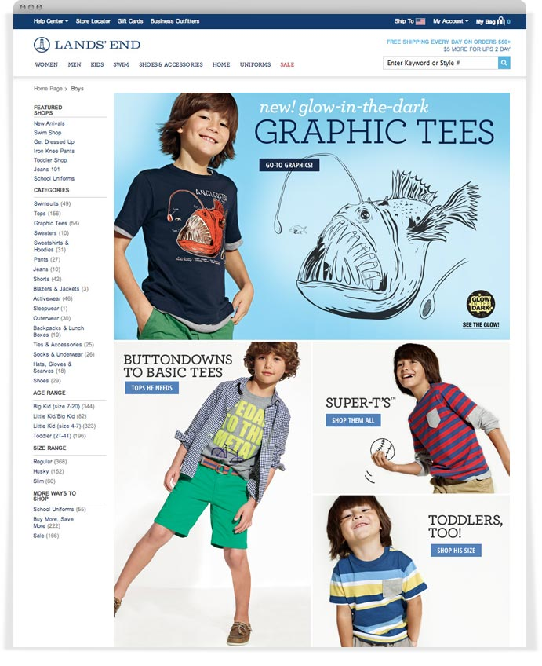
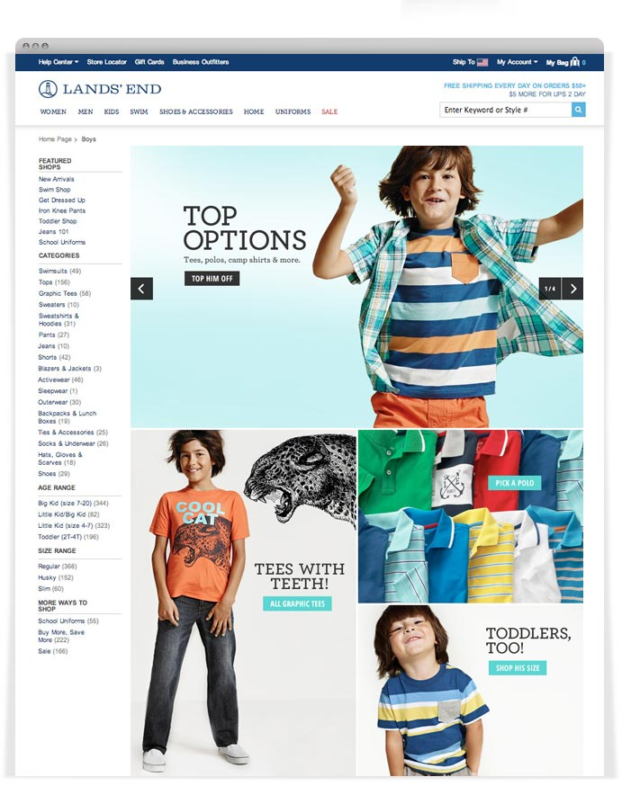
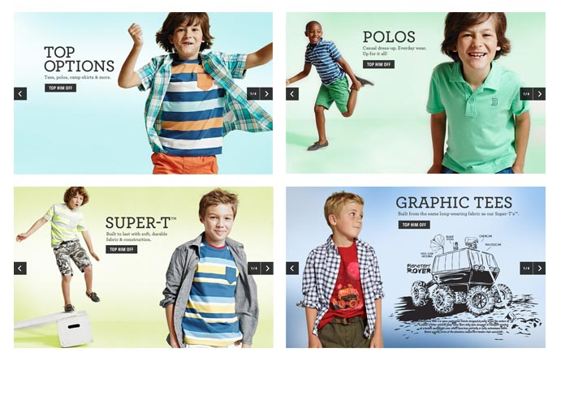
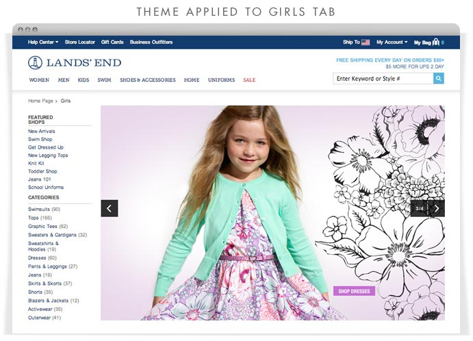
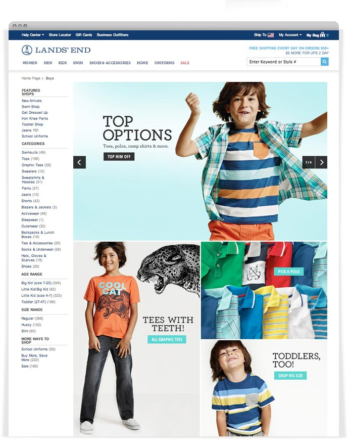
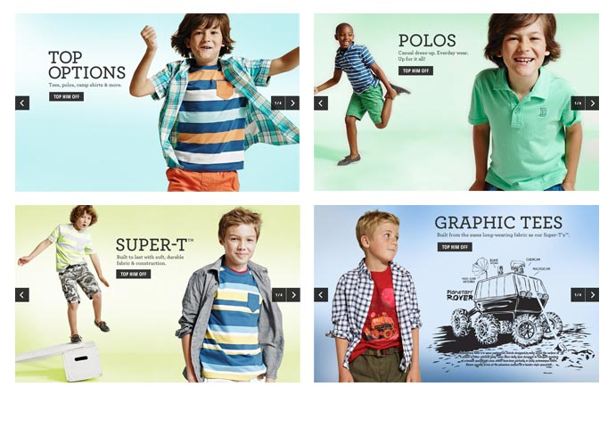
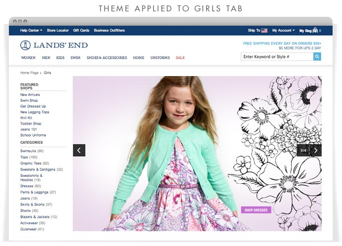
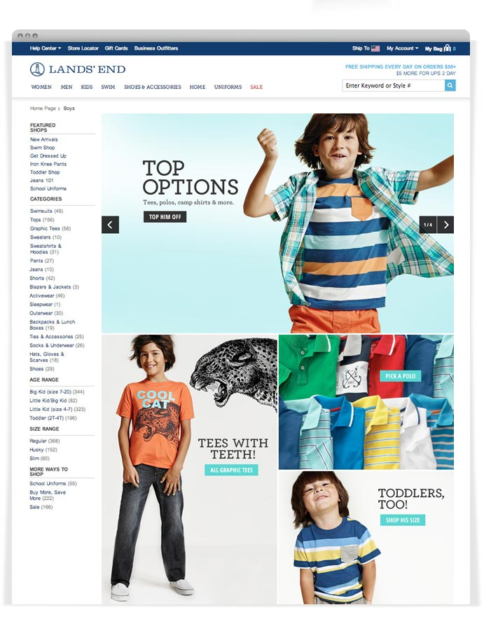
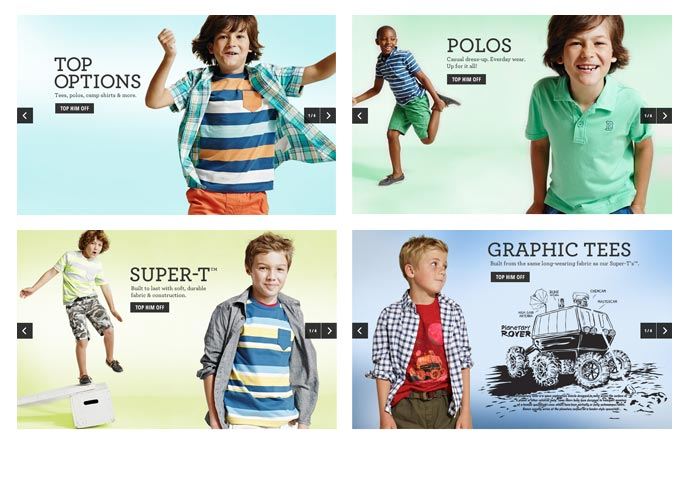
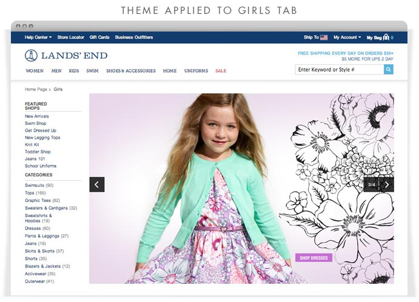

Creative for the Kids Division at landsend.com
Pulling design elements from clothing was a running theme throughout the season. The first tab shown here utilizes a rollover to demonstrate the glow-in-the-dark graphic. The tabs shown below incorporates a slide presentation that showcases favorite tops for boys and a sample of how this theme was applied to the girls category.
Tasks included:
- art direction and design execution
- omni-channel presentations
- mobile versions for responsive design
- concepts and design for digital marketing

 







